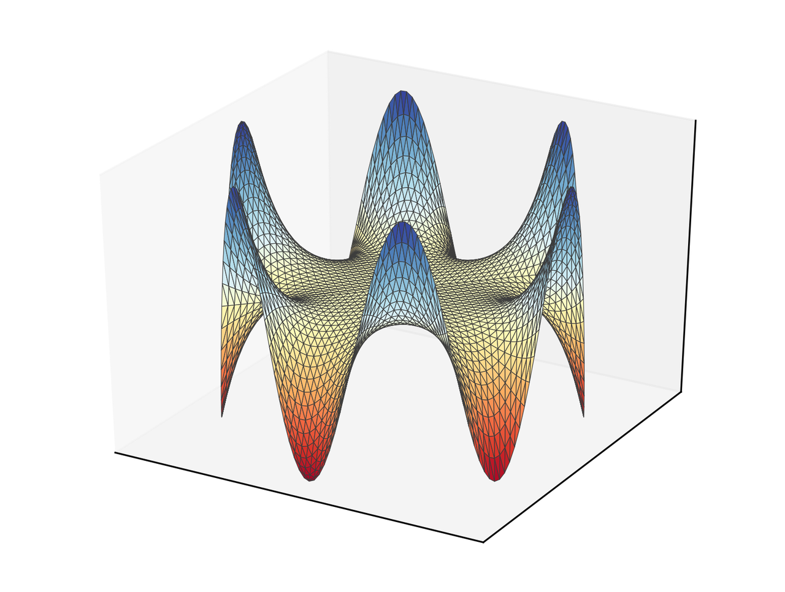

During October (2017) I wrote a program per day for some well-known numerical
methods in both Python and Julia. It was intended to be an exercise to learn
some Julia. You can see a summary here. I succeeded
in 30 of the challenges, except for the BEM
(Boundary Element Method),
where I could not figure out what was wrong that day. The original
post is here.
Thomas Klimpel found the mistake and wrote an email where he described my
mistakes. So, I am creating a new post with a correct implementation
of the BEM.
The Boundary Element Method
We want so solve the equation
\begin{equation*}
\nabla^2 u = -f(x, y)\quad \forall (x, y) \in \Omega\, ,
\end{equation*}
with
\begin{equation*}
u(x) = g(x, y), \quad \forall (x, y)\in \partial \Omega \, .
\end{equation*}
For this method, we need to use an integral representation of the equation,
that, in this case, is
\begin{equation*}
u(\boldsymbol{\xi}) = \int_{S} [u(\mathbf{x}) F(\mathbf{x}, \boldsymbol{\xi})
- q(\mathbf{x})G(\mathbf{x}, \boldsymbol{\xi})]\mathrm{d}S(\mathbf{x})
+ \int_{V} f(\mathbf{x}) G(\mathbf{x}, \boldsymbol{\xi}) \mathrm{d}V(\mathbf{x})
\end{equation*}
with
\begin{equation*}
G(\mathbf{x}, \boldsymbol{\xi})= -\frac{1}{2\pi}\ln|\mathbf{x} - \xi|
\end{equation*}
and
\begin{equation*}
F(\mathbf{x}, \boldsymbol{\xi}) =
-\frac{1}{2\pi |\mathbf{x} - \boldsymbol{\xi}|^2}
(\mathbf{x} - \boldsymbol{\xi})\cdot\hat{\mathbf{n}}
\end{equation*}
Then, we can form a system of equations
\begin{equation*}
[G]\{q\} = [F]\{u\}\, ,
\end{equation*}
that we obtain by discretization of the boundary. If we take constant
variables over the discretization, the integral can be computed analytically
by
\begin{equation*}
G_{nm} = -\frac{1}{2\pi}\left[r \sin\theta\left(\ln|r| - 1\right)
+ \theta r\cos\theta\right]^{\theta_B, r_B}_{\theta_A, r_A}
\end{equation*}
and
\begin{equation*}
F_{nm} = \left[\frac{\theta}{2\pi}\right]^{\theta_B}_{\theta_A}
\end{equation*}
for points \(n\) and \(m\) in different elements, and the subindices
\(A,B\) refer to the endpoints of the evaluation element. We should be
careful evaluating this expression since both \(r_A\) and \(r_B\) can
be (close to) zero and make it explode. Also, here it was the main problem
since I forgot to compute the angles with respect to elements that are,
in general, not aligned with horizontal or vertical axes.
For diagonal terms the integrals evaluate to
\begin{equation*}
G_{nn} = -\frac{L}{2\pi}\left(\ln\left\vert\frac{L}{2}\right\vert - 1\right)
\end{equation*}
and
\begin{equation*}
F_{nn} = - \frac{1}{2}
\end{equation*}
with \(L\) the size of the element.
Following is the code. Keep in mind that this code works for purely Dirichlet
problems. For mixed Dirichlet-Neumann the influence matrices would need
rearranging to separate known and unknowns in opposite sides of the equation.
You can download the files for this project here.
It includes a YML file to create a conda environment with the dependencies
listed. For example, it uses version 3.0 of
Meshio.
import numpy as np
from numpy import log, arctan2, pi, mean, arctan
from numpy.linalg import norm, solve
import matplotlib.pyplot as plt
from mpl_toolkits.mplot3d import Axes3D
import meshio
def assem(coords, elems):
"""Assembly matrices for the BEM problem
Parameters
----------
coords : ndarray, float
Coordinates for the nodes.
elems : ndarray, int
Connectivity for the elements.
Returns
-------
Gmat : ndarray, float
Influence matrix for the flow.
Fmat : ndarray, float
Influence matrix for primary variable.
"""
nelems = elems.shape[0]
Gmat = np.zeros((nelems, nelems))
Fmat = np.zeros((nelems, nelems))
for ev_cont, elem1 in enumerate(elems):
for col_cont, elem2 in enumerate(elems):
pt_col = mean(coords[elem2], axis=0)
if ev_cont == col_cont:
L = norm(coords[elem1[1]] - coords[elem1[0]])
Gmat[ev_cont, ev_cont] = - L/(2*pi)*(log(L/2) - 1)
Fmat[ev_cont, ev_cont] = - 0.5
else:
Gij, Fij = influence_coeff(elem1, coords, pt_col)
Gmat[ev_cont, col_cont] = Gij
Fmat[ev_cont, col_cont] = Fij
return Gmat, Fmat
def influence_coeff(elem, coords, pt_col):
"""Compute influence coefficients
Parameters
----------
elems : ndarray, int
Connectivity for the elements.
coords : ndarray, float
Coordinates for the nodes.
pt_col : ndarray
Coordinates of the colocation point.
Returns
-------
G_coeff : float
Influence coefficient for flows.
F_coeff : float
Influence coefficient for primary variable.
"""
dcos = coords[elem[1]] - coords[elem[0]]
dcos = dcos / norm(dcos)
rotmat = np.array([[dcos[1], -dcos[0]],
[dcos[0], dcos[1]]])
r_A = rotmat.dot(coords[elem[0]] - pt_col)
r_B = rotmat.dot(coords[elem[1]] - pt_col)
theta_A = arctan2(r_A[1], r_A[0])
theta_B = arctan2(r_B[1], r_B[0])
if norm(r_A) <= 1e-6:
G_coeff = r_B[1]*(log(norm(r_B)) - 1) + theta_B*r_B[0]
elif norm(r_B) <= 1e-6:
G_coeff = -(r_A[1]*(log(norm(r_A)) - 1) + theta_A*r_A[0])
else:
G_coeff = r_B[1]*(log(norm(r_B)) - 1) + theta_B*r_B[0] -\
(r_A[1]*(log(norm(r_A)) - 1) + theta_A*r_A[0])
F_coeff = theta_B - theta_A
return -G_coeff/(2*pi), F_coeff/(2*pi)
def eval_sol(ev_coords, coords, elems, u_boundary, q_boundary):
"""Evaluate the solution in a set of points
Parameters
----------
ev_coords : ndarray, float
Coordinates of the evaluation points.
coords : ndarray, float
Coordinates for the nodes.
elems : ndarray, int
Connectivity for the elements.
u_boundary : ndarray, float
Primary variable in the nodes.
q_boundary : [type]
Flows in the nodes.
Returns
-------
solution : ndarray, float
Solution evaluated in the given points.
"""
npts = ev_coords.shape[0]
solution = np.zeros(npts)
for k in range(npts):
for ev_cont, elem in enumerate(elems):
pt_col = ev_coords[k]
G, F = influence_coeff(elem, coords, pt_col)
solution[k] += u_boundary[ev_cont]*F - q_boundary[ev_cont]*G
return solution
#%% Simulation
mesh = meshio.read("disk.msh")
elems = mesh.cells["line"]
bound_nodes = list(set(elems.flatten()))
coords = mesh.points[bound_nodes, :2]
x, y = coords.T
x_m, y_m = 0.5*(coords[elems[:, 0]] + coords[elems[:, 1]]).T
theta = np.arctan2(y_m, x_m)
u_boundary = 3*np.cos(6*theta)
#%% Assembly
Gmat, Fmat = assem(coords, elems)
#%% Solution
q_boundary = solve(Gmat, Fmat.dot(u_boundary))
#%% Evaluation
ev_coords = mesh.points[:, :2]
ev_x, ev_y = ev_coords.T
solution = eval_sol(ev_coords, coords, elems, u_boundary, q_boundary)
#%% Visualization
tris = mesh.cells["triangle"]
fig = plt.figure()
ax = fig.add_subplot(111, projection='3d')
ax.plot_trisurf(ev_x, ev_y, solution, cmap="RdYlBu", lw=0.3,
edgecolor="#3c3c3c")
plt.xticks([])
plt.yticks([])
ax.set_zticks([])
plt.savefig("bem_solution.png", bbox_inches="tight", transparent=True,
dpi=300)
The result in this case is the following.
